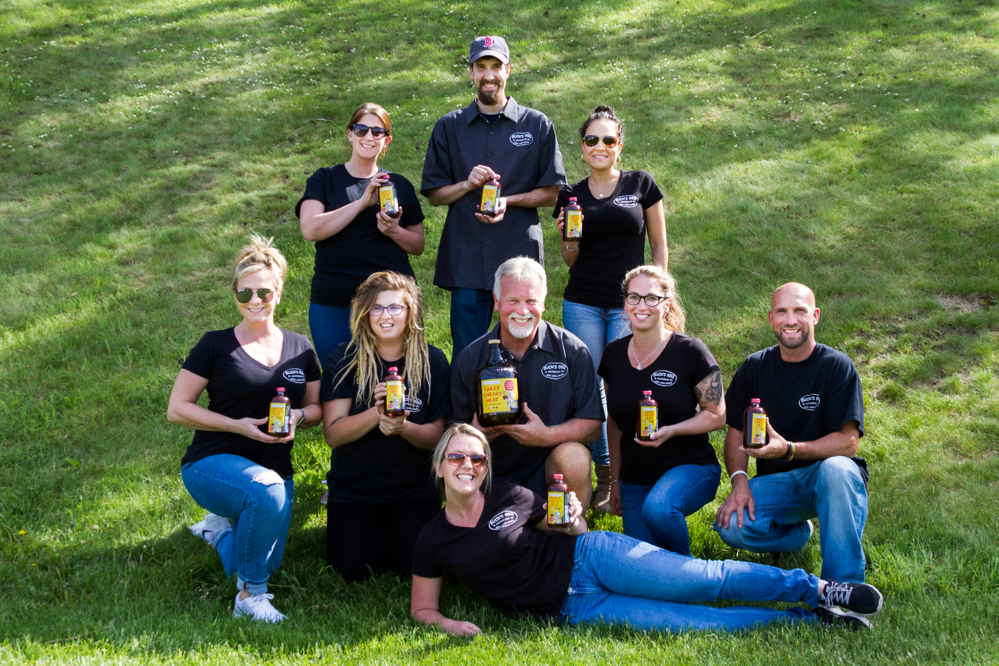

All of our products are an all natural.
The journey of a BBQ entrepreneur often starts with a small step, and this is no different for Al (or Buck as he is known by the BBQing community). He never went to culinary school, but started doing pig roasts for his friend's parties. This activity done for friends and family soon turned into a love and he started his own business.
Buck lead the charge for opening up New England to BBQ. When he opened Buck’s Roadside BBQ it was rare to find any BBQ restaurants in Massachusetts! Buck’s Roadside BBQ was a family owned and run business and, since even the best things have to end, so did Buck’s Roadside BBQ.
While Buck owned this restaurant it was a necessity to make his own rubs, sauces, marinades, and all sorts of things that made his BBQ the best. And even though the restaurant is closed his BBQing secrets live on. He continues to cook for friends and family and now sells his sauces and marinades.
Buck’s sauces do not resemble anything you have ever had, it is true Americanah BBQ.
As Buck will say “This is Buck’s BBQ, I don’t conform, I cook what I cook, and if you don’t like it, Buck it”.
